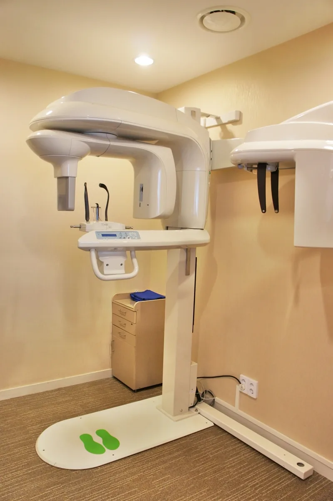
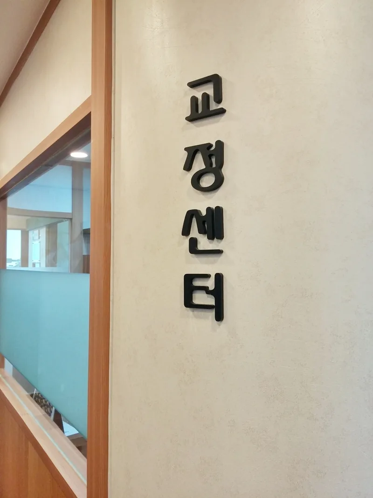

01
2층 · 임플란트 · 심미보철 · 치주
촬영부터 회복까지
한 층에서
2층에는 진료실 외에 수술실과 CT실, 회복실이 따로 있어 촬영과 수술, 수술 뒤 쉬는 시간이 한 층 안에서 이어집니다.
이 층진료실 · 상담실 · 수술실 두 곳 · CT실 · 회복실

1984년부터 안중 주민의 치아를 봐 왔습니다.
치료 계획은 환자와 의논해 정하고, 치료가 끝난 뒤에도 계속 살핍니다. 원장 네 명이 층을 나눠 진료하고, 보철물을 만드는 기공실도 같은 건물에 있습니다.
기존 홈페이지 2026년 11월 내용 기준


2층은 임플란트와 수술, 3층은 교정, 4층은 보철물 제작 — 한 건물 안에서 층마다 나뉘어 있습니다.
01
2층 · 임플란트 · 심미보철 · 치주
2층에는 진료실 외에 수술실과 CT실, 회복실이 따로 있어 촬영과 수술, 수술 뒤 쉬는 시간이 한 층 안에서 이어집니다.
이 층진료실 · 상담실 · 수술실 두 곳 · CT실 · 회복실

02
3층 · 교정 · 심미보철 · 소아 · 미백
교정과 소아·미백 진료를 하는 층입니다. 금요일에는 오후 8시까지 교정 진료를 합니다.
이 층접수대 · 대기실 · 진료실

03
4층
같은 건물 4층에 기공실이 있습니다. 라미네이트·올세라믹·크라운 같은 보철물을 굽는 소성 장비(Porcelain Furnace)를 갖추고 있습니다.

가운데 칸은 그날 진료하는 층입니다.
화·목요일은 오후 8시까지 진료하고(목요일은 2층), 금요일은 2층이 오후 6시, 교정과가 오후 8시까지 진료합니다. 토요일은 오후 2시까지 점심시간 없이 진료하고, 일요일과 공휴일은 휴진합니다.
월요일은 오전 10시 ~ 오후 6시, 금요일은 오후 2시 ~ 8시에 교정 진료를 합니다.
전화(031-683-7575)나 카카오톡 채널로 문의하실 수 있습니다. 온라인 상담 게시판에 비밀글로 남기셔도 됩니다.